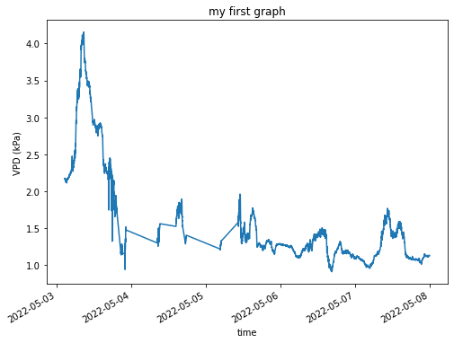
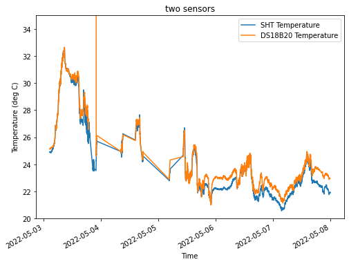
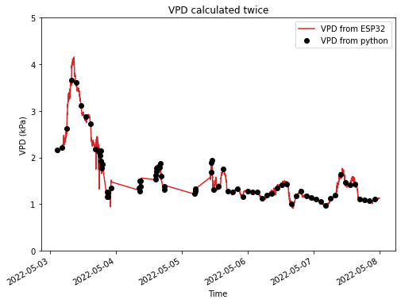
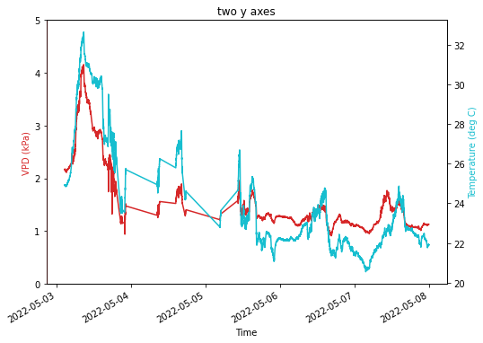
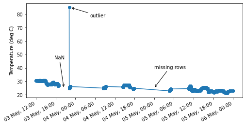
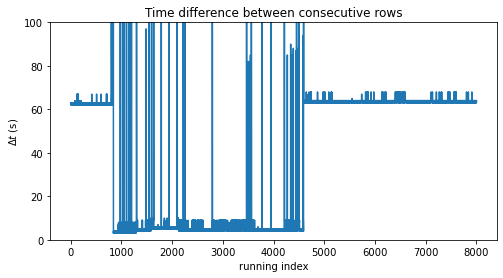
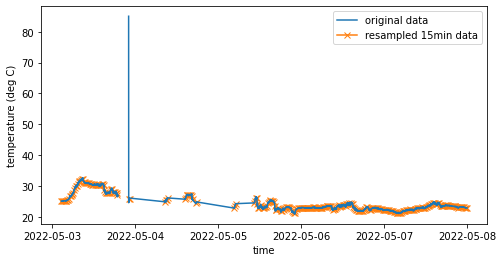
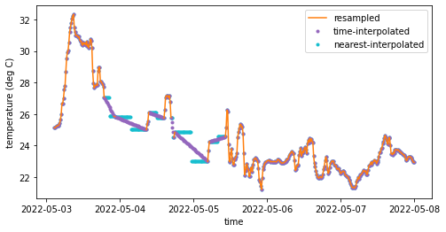
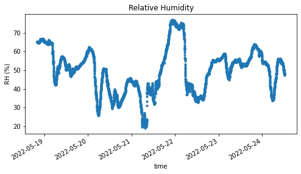
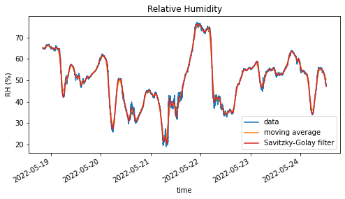

import urllib
import matplotlib.pyplot as plt
import numpy as np
import pandas as pd
import os.path
import matplotlib.dates as mdates
import datetime as dt
import matplotlib as mpl
from pandas.tseries.frequencies import to_offset
from scipy.signal import savgol_filter2 First Steps — basic time series analysis
Import packages. If you don’t have a certain package, e.g. ‘newpackage’, just type
pip install newpackage
This is how you download data from Thingspeak
filename1 = "test_elad.csv"
# if file is not there, go fetch it from thingspeak
if not os.path.isfile(filename1):
# define what to download
channels = "1690490"
fields = "1,2,3,4,6,7"
minutes = "30"
# https://www.mathworks.com/help/thingspeak/readdata.html
# format YYYY-MM-DD%20HH:NN:SS
start = "2022-05-01%2000:00:00"
end = "2022-05-08%2000:00:00"
# download using Thingspeak's API
# url = f"https://api.thingspeak.com/channels/{channels}/fields/{fields}.csv?minutes={minutes}"
url = f"https://api.thingspeak.com/channels/{channels}/fields/{fields}.csv?start={start}&end={end}"
data = urllib.request.urlopen(url)
d = data.read()
# save data to csv
file = open(filename1, "w")
file.write(d.decode('UTF-8'))
file.close()You can load the data using Pandas. Here we create a “dataframe”, which is a fancy name for a table.
# load data
df = pd.read_csv(filename1)
# rename columns
df = df.rename(columns={"created_at": "timestamp",
"field1": "T1",
"field2": "RH",
"field3": "T2",
"field4": "motion_sensor",
"field6": "VWC",
"field7": "VPD",})
# set timestamp as index
df['timestamp'] = pd.to_datetime(df['timestamp'])
df = df.set_index('timestamp')2.0.1 First graph
# %matplotlib widget
fig, ax = plt.subplots(1, figsize=(8,6))
ax.plot(df['VPD'])
# add labels and title
ax.set(xlabel = "time",
ylabel = "VPD (kPa)",
title = "my first graph")
# makes slanted dates
plt.gcf().autofmt_xdate() 
2.0.2 Two columns in the same graph
# %matplotlib widget
fig, ax = plt.subplots(1, figsize=(8,6))
ax.plot(df['T1'], color="tab:blue", label="SHT Temperature")
ax.plot(df['T2'], color="tab:orange", label="DS18B20 Temperature")
# add labels and title
ax.set(xlabel = "Time",
ylabel = "Temperature (deg C)",
title = "two sensors",
ylim=[20,35],
)
# makes slanted dates
plt.gcf().autofmt_xdate()
ax.legend(loc="upper right")<matplotlib.legend.Legend at 0x7fe6c9730610>
2.0.3 Calculate stuff
You can calculate new things and save them as new columns of your dataframe.
def calculate_es(T):
es = np.exp((16.78 * T - 116.9) / (T + 237.3))
return es
def calculate_ed(es, rh):
return es * rh / 100.0
es = calculate_es(df['T1'])
ed = calculate_ed(es, df['RH'])
df['VPD2'] = es - edSee if what you calculated makes sense.
# %matplotlib widget
fig, ax = plt.subplots(1, figsize=(8,6))
ax.plot(df['VPD'], color="tab:red", label="VPD from ESP32")
ax.plot(df['VPD2'][::100], "o", color="black", label="VPD from python")
# add labels and title
ax.set(xlabel = "Time",
ylabel = "VPD (kPa)",
title = "VPD calculated twice",
ylim=[0,5],
)
# makes slanted dates
plt.gcf().autofmt_xdate()
ax.legend(loc="upper right")<matplotlib.legend.Legend at 0x7fe6989ca700>
2.0.4 Two y axes
# %matplotlib widget
fig, ax = plt.subplots(1, figsize=(8,6))
ax.plot(df['VPD'], color="tab:red", label="VPD")
plt.gcf().autofmt_xdate()
ax2 = ax.twinx()
ax2.plot(df['T1'], color="tab:cyan", label="Temperature")
ax.set(xlabel = "Time",
title = "two y axes",
ylim=[0,5],
)
ax.set_ylabel('VPD (kPa)', color='tab:red')
ax.spines['left'].set_color('red')
ax2.set_ylabel('Temperature (deg C)', color='tab:cyan')Text(0, 0.5, 'Temperature (deg C)')
2.1 NaN, Missing data, Outliers
# %matplotlib widget
start = "2022-05-03 12:00:00"
end = "2022-05-06 00:00:00"
fig, ax = plt.subplots(1, figsize=(8,4))
# plot using pandas' plot method
df.loc[start:end, 'T2'].plot(ax=ax,
linestyle='-',
marker='o',
color="tab:blue",
label="data")
# annotate examples here:
# https://jakevdp.github.io/PythonDataScienceHandbook/04.09-text-and-annotation.html
ax.annotate("NaN", # text to write, if nothing, then ""
xy=('2022-05-03 20:30:00', 25), # (x,y coordinates for the tip of the arrow)
xycoords='data', # xy as 'data' coordinates
xytext=(-20, 60), # xy coordinates for the text
textcoords='offset points', # xytext relative to xy
arrowprops=dict(arrowstyle="->") # pretty arrow
)
ax.annotate("outlier",
xy=('2022-05-03 22:30:00', 85),
xycoords='data',
xytext=(40, -20),
textcoords='offset points',
arrowprops=dict(arrowstyle="->")
)
ax.annotate("missing rows",
xy=('2022-05-05 00:00:00', 25),
xycoords='data',
xytext=(0, 40),
textcoords='offset points',
arrowprops=dict(arrowstyle="->")
)
ax.xaxis.set_major_formatter(mdates.DateFormatter('%d %b, %H:00'))
plt.gcf().autofmt_xdate()
ax.set(xlabel="",
ylabel="Temperature (deg C)")[Text(0.5, 0, ''), Text(0, 0.5, 'Temperature (deg C)')]
The arrows (annotate) work because the plot was
df['column'].plot()
If you use the usual
ax.plot(df['column'])
then you matplotlib will not understand timestamps as x-positions. In this case follow the instructions below.
# %matplotlib widget
start = "2022-05-03 12:00:00"
end = "2022-05-06 00:00:00"
fig, ax = plt.subplots(1, figsize=(8,4))
ax.plot(df.loc[start:end, 'T2'], linestyle='-', marker='o', color="tab:blue", label="data")
t_nan = '2022-05-03 20:30:00'
x_nan = mdates.date2num(dt.datetime.strptime(t_nan, "%Y-%m-%d %H:%M:%S"))
ax.annotate("NaN",
xy=(x_nan, 25),
xycoords='data',
xytext=(-20, 60),
textcoords='offset points',
arrowprops=dict(arrowstyle="->")
)
t_outlier = '2022-05-03 22:30:00'
x_outlier = mdates.date2num(dt.datetime.strptime(t_outlier, "%Y-%m-%d %H:%M:%S"))
ax.annotate("outlier",
xy=(x_outlier, 85),
xycoords='data',
xytext=(40, -20),
textcoords='offset points',
arrowprops=dict(arrowstyle="->")
)
t_missing = '2022-05-05 00:00:00'
x_missing = mdates.date2num(dt.datetime.strptime(t_missing, "%Y-%m-%d %H:%M:%S"))
ax.annotate("missing rows",
xy=(x_missing, 25),
xycoords='data',
xytext=(0, 40),
textcoords='offset points',
arrowprops=dict(arrowstyle="->")
)
# code for hours, days, etc
# https://docs.python.org/3/library/datetime.html#strftime-and-strptime-format-codes
ax.xaxis.set_major_formatter(mdates.DateFormatter('%d %b, %H:00'))
plt.gcf().autofmt_xdate()
ax.set(xlabel="",
ylabel="Temperature (deg C)")[Text(0.5, 0, ''), Text(0, 0.5, 'Temperature (deg C)')]
# %matplotlib widget
fig, ax = plt.subplots(1, figsize=(8,4))
delta_index = (df.index.to_series().diff() / pd.Timedelta('1 sec') ).values
ax.plot(delta_index)
ax.set(ylim=[0, 100],
xlabel="running index",
ylabel=r"$\Delta t$ (s)",
title="Time difference between consecutive rows")[(0.0, 100.0),
Text(0.5, 0, 'running index'),
Text(0, 0.5, '$\\Delta t$ (s)'),
Text(0.5, 1.0, 'Time difference between consecutive rows')]
2.2 Resample
2.2.1 Downsampling
# %matplotlib widget
fig, ax = plt.subplots(1, figsize=(8,4))
# Downsample to spaced out data points. Change the number below, see what happens.
window_size = '15min'
df_resampled = (df['T2'].resample(window_size) # resample doesn't do anything yet, just divides data into buckets
.mean() # this is where stuff happens. you can also choose "sum", "max", etc
)
# optional, add half a window size to timestamp
df_resampled.index = df_resampled.index + to_offset(window_size) / 2
ax.plot(df['T2'], color="tab:blue", label="original data")
ax.plot(df_resampled, marker='x', color="tab:orange", zorder=-1,
label=f"resampled {window_size} data")
ax.legend()
ax.set(xlabel="time",
ylabel="temperature (deg C)")[Text(0.5, 0, 'time'), Text(0, 0.5, 'temperature (deg C)')]
2.2.2 Filling missing data
# %matplotlib widget
fig, ax = plt.subplots(1, figsize=(8,4))
# see options for interpolation methods here:
# https://pandas.pydata.org/docs/reference/api/pandas.DataFrame.interpolate.html
df_interpolated1 = df_resampled.interpolate(method='time')
df_interpolated2 = df_resampled.interpolate(method='nearest')
ax.plot(df_resampled, color="tab:orange", label="resampled")
ax.plot(df_interpolated1, '.', color="tab:purple", zorder=-1,
label=f"time-interpolated")
ax.plot(df_interpolated2, '.', color="tab:cyan", zorder=-2,
label=f"nearest-interpolated")
ax.legend()
ax.set(xlabel="time",
ylabel="temperature (deg C)")[Text(0.5, 0, 'time'), Text(0, 0.5, 'temperature (deg C)')]
2.3 Smoothing noisy data
Let’s first download data from a different project.
filename2 = "test_peleg.csv"
# if file is not there, go fetch it from thingspeak
if not os.path.isfile(filename2):
# define what to download
channels = "1708067"
fields = "1,2,3,4,5"
minutes = "30"
# https://www.mathworks.com/help/thingspeak/readdata.html
# format YYYY-MM-DD%20HH:NN:SS
start = "2022-05-15%2000:00:00"
end = "2022-05-25%2000:00:00"
# download using Thingspeak's API
# url = f"https://api.thingspeak.com/channels/{channels}/fields/{fields}.csv?minutes={minutes}"
url = f"https://api.thingspeak.com/channels/{channels}/fields/{fields}.csv?start={start}&end={end}"
data = urllib.request.urlopen(url)
d = data.read()
# save data to csv
file = open(filename2, "w")
file.write(d.decode('UTF-8'))
file.close()# load data
df = pd.read_csv(filename2)
# rename columns
df = df.rename(columns={"created_at": "timestamp",
"field1": "T",
"field2": "Tw",
"field3": "RH",
"field4": "VPD",
"field5": "dist",
})
# set timestamp as index
df['timestamp'] = pd.to_datetime(df['timestamp'])
df = df.set_index('timestamp')df| entry_id | T | Tw | RH | VPD | dist | |
|---|---|---|---|---|---|---|
| timestamp | ||||||
| 2022-05-18 20:09:31+00:00 | 24716 | 23.85 | 23.3125 | 65.32 | 1.02532 | 7.208 |
| 2022-05-18 20:10:32+00:00 | 24717 | 23.88 | 23.2500 | 65.32 | 1.02717 | 7.208 |
| 2022-05-18 20:11:33+00:00 | 24718 | 23.90 | 23.2500 | 65.23 | 1.03107 | 7.276 |
| 2022-05-18 20:12:33+00:00 | 24719 | 23.90 | 23.2500 | 65.19 | 1.03226 | 7.208 |
| 2022-05-18 20:13:34+00:00 | 24720 | 23.89 | 23.2500 | 65.15 | 1.03282 | 7.633 |
| ... | ... | ... | ... | ... | ... | ... |
| 2022-05-24 12:18:35+00:00 | 32711 | 27.47 | 26.1250 | 47.49 | 1.92397 | 8.925 |
| 2022-05-24 12:19:36+00:00 | 32712 | 27.47 | 26.1250 | 47.62 | 1.91921 | 8.925 |
| 2022-05-24 12:20:39+00:00 | 32713 | 27.47 | 26.1250 | 47.96 | 1.90675 | 8.925 |
| 2022-05-24 12:21:40+00:00 | 32714 | 27.47 | 26.1875 | 47.75 | 1.91444 | 8.925 |
| 2022-05-24 12:22:41+00:00 | 32715 | 27.49 | 26.1875 | 47.94 | 1.90971 | 8.925 |
8000 rows × 6 columns
2.4 Smoothing noisy data
# %matplotlib widget
fig, ax = plt.subplots(1, figsize=(8,4))
ax.plot(df['RH'], '.')
# add labels and title
ax.set(xlabel = "time",
ylabel = "RH (%)",
title = "Relative Humidity")
# makes slanted dates
plt.gcf().autofmt_xdate() 
2.4.1 Moving average and SavGol
# %matplotlib widget
fig, ax = plt.subplots(1, figsize=(8,4))
# apply a rolling average of size "window_size",
# it can be either by number of points, or by window time
# window_size = 30 # number of measurements
window_size = '120min' # minutes
RH_smooth = df['RH'].rolling(window_size, center=True).mean().to_frame()
RH_smooth.rename(columns={'RH': 'rolling_avg'}, inplace=True)
RH_smooth['SG'] = savgol_filter(df['RH'], window_length=121, polyorder=2)
ax.plot(df['RH'], color="tab:blue", label="data")
ax.plot(RH_smooth['rolling_avg'], color="tab:orange", label="moving average")
ax.plot(RH_smooth['SG'], color="tab:red", label="Savitzky-Golay filter")
# add labels and title
ax.set(xlabel = "time",
ylabel = "RH (%)",
title = "Relative Humidity")
# makes slanted dates
plt.gcf().autofmt_xdate()
ax.legend()<matplotlib.legend.Legend at 0x7fe6a0525730>